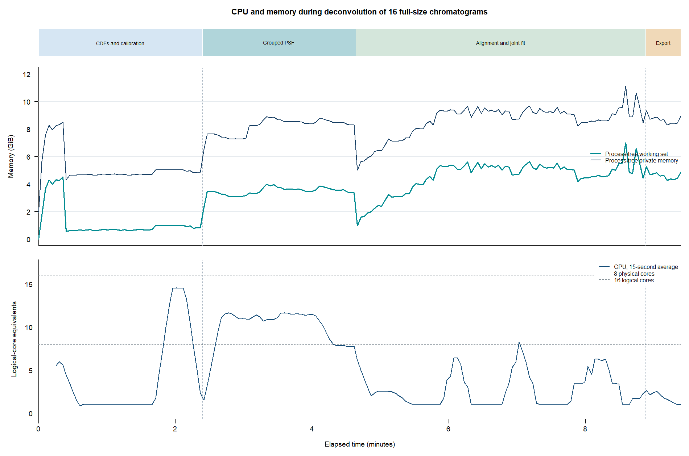
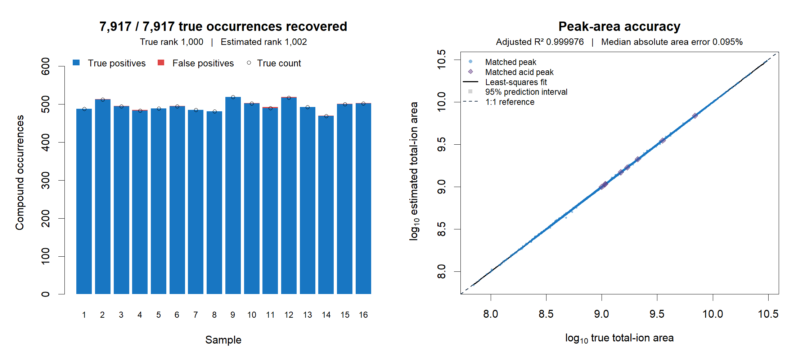
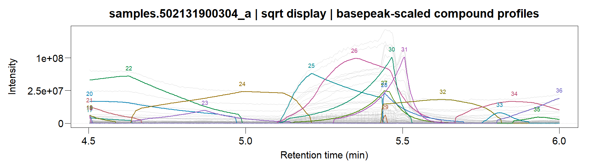
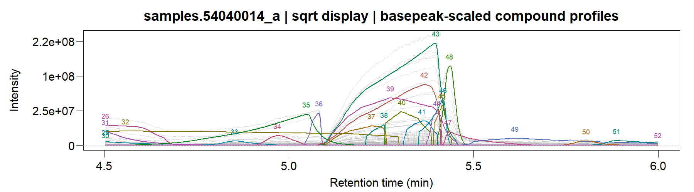

gcmsDeco() accepts an experiment directory and analyzes
its chromatograms together. The batch can share PSF calibration. Each
sample has its own native scan grid, smooth background and log-concave
compound profiles. Simultaneous factorisation shares mass spectra across
samples and returns one consensus compound library with a
sample-by-compound area table.
Organize and fit an experiment
chromatograms/
standards/
alkanes.cdf
beer1/
injection001.cdf
injection002.cdf
beer2/
injection003.cdf
library(GCMSprime)
experiment <- gcmsDeco("chromatograms", output_dir="beer_results",
family=quasipoisson("identity"), precluster=32L,
batch=list(plots=TRUE))
experiment$samples
experiment$areas
coef(experiment, normalize="l1")
GIC(experiment)
plot(experiment, sample=1L, type="lines", file="sample1_traces.pdf")The standards subdirectory is reserved for calibration
chromatograms. Analytical samples are sorted using their acquisition
timestamps, including time-zone information. Group labels come from
their relative directories. Each sample uses the nearest alkane standard
in acquisition time. A single standard can calibrate the whole
experiment; alkanes_file= explicitly selects a particular
calibration.
For files without acquisition timestamps, supply their relative paths in the intended run order:
Two distinct 16-sample benchmarks
The two experiments use different simulated chromatograms. Both retain the native scan grids and report recovery against the generating compounds.
| Setting | Small-scale software comparison | Large-scale resource validation |
|---|---|---|
| Samples | 16 | 16 |
| Scans per sample | 1,200 | 10,000 |
| Recorded ion channels | 258 | 550 |
| Reference compounds | 100 | 1,000 |
| True occurrences | 769 | 7,917 |
| Samples containing the acid | 7 | 8 |
| PSF calibration | Blind, two windows | Standard-assisted, ten windows |
| Complete 16-sample analysis | 52.37 s (0.87 min) | 533.88 s (8.90 min) |
Both runs used GCMSprime and logconNMF 0.1.0.9007. Timings cover the complete batch from CDF input through export. In the small experiment, CDF preparation, calibration and grouping took 10.31 s, grouped initialization and joint refinement took 37.87 s, and result construction and export took 3.98 s. The benchmark wrapper added 0.21 s. The large experiment is documented below.
Small-scale 16-sample software comparison
The small-scale fit (seed 9118) uses two blind-PSF
windows, three PSF iterations, 32 common ion groups and up to 12 initial
conditional sweeps on the original channels. All profile figures for
this simulation on both websites use the same saved fit.
The 16 chromatograms share a library of 100 reference compounds. Each spans a 20-minute retention window, with 1,200 scans and all 258 mass channels. Compounds are absent from about half the samples, giving 769 true occurrences. Library retention indices determine their positions. One compound has a broad shark-fin-shaped acid profile; the remaining profiles are exponentially modified Gaussians. Higher concentrations extend peaks towards later times from approximately fixed leading edges, and a small positive drift shifts successive injections to the right.
The smooth B-spline background is derived from the experimental
gcmsData2 window and contributes 3.03% of the integrated
compound signal. The simulation retains its native abundance scale and
uses quasi-Poisson noise with dispersion 783.18,
estimated from that window. GCMSprime estimates dispersion separately in
each sample, with a median estimate of 829.55. The
generating retention-index maps are used for scoring; the deconvolution
receives neither the known areas nor the true profiles.
The reproducible recipe includes the empirical background and complete reference library:
library(GCMSbenchmark)
bench <- system.file("benchmarks", package="GCMSbenchmark", mustWork=TRUE)
source(file.path(bench, "simulated-16.R"), encoding="UTF-8")
small <- runBenchmark16("benchmark-small", method="GCMSprime", ncores=8L)
small$summary[c("analysis_s", "TP", "FP", "FN", "F1")]
# Optional figures from the saved results:
source(file.path(bench, "plot-simulated-16.R"), encoding="UTF-8")
plotBenchmark16("benchmark-small")The analysis recovered 769 of 769 true occurrences, with only 26 false positives (peak F1 0.983), including all seven acid occurrences. Ordinary adjusted log-area R² was 0.999628, the median absolute peak-area error was 0.10%, and mean spectral ion-support F1 was 0.995 at the shared 0.1% base-peak threshold.
The benchmark wrapper measured 52.37 s from CDF input through results with four two-thread PSF workers and eight threads available for joint refinement on an HP ZBook Fury G8, Intel Core i9-11950H, eight physical cores, 16 logical threads, Windows and R 4.5.0. CDF generation is separate.


The benchmarks against other software give all seven workflows, matching rules, noise calibration, profile plots and tables.
Large-scale 16-sample resource benchmark
This independent simulation (seed 171117) has 16
chromatograms, 10,000 scans, 550 recorded ion channels and 1,000
reference compounds. Their spectra occupy 258 channels. The
remaining channels contain background. The simulated peaks broaden with
abundance and drift in retention time. The data include irregular scan
intervals, a background estimated from gcmsData2 and
quasi-Poisson dispersion 783.18. A separate narrow-peak standard
supplies the time-varying PSF.
The conditional solver estimated 1,002 shared identities from the original ion measurements. All 7,917 true occurrences were recovered, including every occurrence of the shark-fin acid. The largest absolute area error among the eight acid occurrences was 0.19%.
| Quantity | Measured result |
|---|---|
| True occurrences recovered | 7,917 / 7,917 |
| False positives / false negatives | 13 / 0 |
| Occurrence F1 | 0.99918 |
| Joint quasi-GIC | 34,062,277 |
| Median spectral cosine | 0.9999989 |
| Mean within-spectrum ion F1 | 0.99519 |
| Mean profile cosine | 0.999984 |
| Median absolute peak-area error | 0.095% |
| Adjusted log-area R² | 0.999976 |
| Acid occurrences recovered | 8 / 8 |
Scoring uses maximum-cardinality one-to-one matching within 0.25 minutes and a minimum spectral cosine of 0.9. Ion-support F1 uses a shared cutoff of 0.1% of base-peak intensity. Area and profile accuracy are measured on matched occurrences. The small-scale software comparison uses RI-constrained reciprocal hits.
| CDF workflow stage | Seconds |
|---|---|
| Reading data, preparing sample PSFs and initialization | 144.35 |
| Grouped PSF regression, alignment and joint original-channel refinement | 357.67 |
| Constructing and exporting results | 31.86 |
| Complete fit and exports | 533.88 |
Within the 357.67 s coupled stage, grouped PSF regression took 108.75 s and alignment and joint refinement took 248.67 s. Simulation, separate standard calibration and scoring against truth are outside the timed fit.
On the HP ZBook Fury G8 (Core i9-11950H, eight physical cores, 16 logical cores and 64 GB RAM), the memory-aware scheduler used 6 PSF workers with 2 threads each. The joint solver could use all 16 threads. Across the measured workflow the process tree averaged 4.59 logical-core equivalents and peaked at 6.96 GiB working set and 7.23 GiB private memory. At least 29.46 GiB of physical memory stayed available.


In the left panel, the red bar segments count unmatched calls and the open circles give the true counts. The right panel shows only calls paired with a true occurrence. Violet diamonds identify the eight matched acid peaks. The dashed line marks exact agreement and the shading is the ordinary 95% prediction interval on the log scale.

The acid panel displays the eight correctly matched acid-positive samples from this separate 16-sample large-scale simulation. The acid is absent from the other eight samples, which are omitted from this positive-case shape comparison; this panel does not assess false acid assignments in absent samples. Colours rank the eight displayed true areas from blue to red. The x-axis is seconds relative to each true 1%-height onset. In contrast, the small-scale figures include all 16 samples (seven acid-positive, nine with zero true acid signal), rank colours over all 16 areas, and use retention index. Both displays retain original count amplitudes without unit-height or unit-area normalization. Fitting uses each sample’s original scan grid.
The complete reproducible script and compact measured results are supplied with the source. From the GCMSprime repository root:
# Run from a GCMSprime repository checkout; use a fresh output directory.
source("benchmarks/benchmark_fullsize_16.R")
benchmarkFullsize16("benchmark-large", stage="all", ncores=16L)
plotFullsize16Acid("benchmark-large")This writes inputs, fitted results (including timings), scoring
tables and the acid PNG to benchmark-large. Separate
stage="prepare", "fit" and
"score" calls are available when restarting a stage. The
default directory, when omitted, is
codex_sandbox/fullsize16.
Outputs and memory use
The output directory contains:
-
samples.csv: acquisition order, group, calibration file and sample result paths. -
areas.csv: integrated compound areas; undetected occurrences haveNA. -
consensus.msp: the common spectral library, using the shared 0.1% base-peak cutoff. -
experiment.xlsx: sample information, consensus compounds, packed spectra and areas. -
experiment.rds: the experiment object. -
samples/<sample_id>/: fitted sample RDS, NIST-compatible MSP and Excel results, plus trace and heatmap PDFs whenbatch$plots=TRUE.
Spectral text cells are unwrapped and list fragments by decreasing
intensity. Sample objects retain factor matrices and CDF paths. Grouped
PSF regressions divide the core budget between independent samples and
native threads. The scheduler estimates how many regressions fit in
available memory, including Windows commit headroom. After those workers
exit, a single process shares the original ion counts and fitted means.
OpenMP updates elution profiles across samples. It fits each ion’s
shared spectrum and sample-specific background coefficients
independently, keeping a fixed component order within each ion. The
general identity-link solver can stream original-channel blocks from
disk. Use batch=list(workers=4L) to cap file-import and PSF
worker counts. For this workflow,
experiment$parallel$workers and
experiment$parallel$threads describe the grouped PSF
regressions. ncores sets the total thread budget for joint
refinement.
The same ion groups are used across samples for matching. They are
learned from a pooled, time-binned chromatogram or supplied through
precluster as a saved channel
map, for example one trained on reference spectra. Each sample’s PSF
and scan grid remain separate.
sample1 <- readRDS(experiment$paths[1L])
sample1$compounds
plot(sample1, type="profiles", file="sample1_profiles_spectra.pdf")
fitted(experiment, sample=1L)The simultaneous NMF tutorial gives the mathematical model, alignment, spectral grouping, local updates and simulation results. Its validation includes three samples with all 258 mass channels, differing scan grids, concentration-dependent tails and compounds absent from half the samples. All seven signal noise families are supported.
Scan spacing and exposure
Observed matrices stay on their native scan grids. Monotone alignment changes profile coordinates and bin widths; its Jacobian preserves integrated peak areas. The model is evaluated directly at the original scan times.
By default, GCMSprime models the vendor’s exported intensities with unit exposure. Quadrupole acquisition distributes scan time across the mass range. The effective time per mass also depends on scan step size, scan averaging and acquisition settings; see the Agilent method documentation. ANDI files can contain arbitrary abundance units, so scan duration and the number of exported mass peaks alone do not identify physical count exposure.
If integrated counts and their durations are known, supply exposure explicitly:
experiment <- gcmsDeco("chromatograms", output_dir="count_results",
family=poisson("identity"),
batch=list(exposure=function(metadata, time) metadata$scan_duration))Here scan_duration is appropriate only when it
represents the integration duration of each reported count. A calibrated
per-mass duration can instead be returned by the function. Metadata
vectors are restricted to the fitted scans. With an identity link,
exposure multiplies the latent mean. It is incorporated into profile and
background design values during fitting.
Calibrated beer example
An alkane standard supplies narrow peak shapes for both full
chromatograms. The conditional count workflow estimates a pooled
time-varying PSF and transfers it to each sample’s observed scan times.
In this example, calibration_range=c(6, Inf) excludes the
solvent and early contaminated region from PSF calibration; the
analytical samples retain their full time range and all 518 measured
mass channels.
standard <- "chromatograms/standards/alkanes.cdf"
experiment <- gcmsDeco("chromatograms", output_dir="beer_results",
alkanes_file=standard, calibration_range=c(6, Inf), precluster=32L,
algorithm="conditional", ncores=8L, batch=list(workers=2L))
# Use the calibrated narrow-peak width for onset-based RI coordinates.
reference <- readRDS(experiment$paths[
grepl("54040014_a", experiment$paths)][[1L]])
cal <- calibrateRI(standard, carbon=7:23, psf=reference$psf_standard)
experiment <- annotateRI(experiment, cal, phase="DB5",
msp_file="beer_results/consensus.msp",
xlsx_file="beer_results/experiment.xlsx")A 26-column spline basis with ion-specific nonnegative coefficients allows the background spectrum to change through each chromatogram. The fit used four threads per worker and retained 643 shared identities and 1,076 occurrences.
| Sample | Occurrences | Dispersion | Sample quasi-GIC | Adjusted weighted R² |
|---|---|---|---|---|
| 502131900304_a | 549 | 631.78 | 14,310,415 | 0.98416 |
| 54040014_a | 527 | 617.21 | 15,068,092 | 0.98345 |
The joint quasi-GIC was 28,467,211, with each shared spectrum charged once. The two beer CDFs took 302.19 s from input through export. Preparation and calibration took 122.73 s, grouped regression and joint refinement 172.88 s, and result construction and export 6.10 s. Separate RI calibration took 2.52 s and RI annotation and export took 3.69 s. Plotting is excluded.
Using the Agilent NIST records, a ±30 RI window and a minimum spectral cosine of 0.85, the two beers yielded 212 and 203 distinct reciprocal identifications. There were 88 and 73 additional forward assignments to identities already called in the respective samples. These are tentative identifications in beers of unknown composition.
Diagnostic ions identify all 17 alkanes from C7 to C23. The retention coordinate is the 1%-height onset plus half the local narrow-peak width at that height. The natural cubic RI curve passes through all accepted alkane anchors exactly. MSP files contain phase-labelled DB5 indices; the consensus library uses their medians. Values outside the accepted calibration range remain unassigned.
The full beer fits still contain residual fragmentation and occasional overly broad profiles in difficult overlapping regions. Component counts are estimates under the fitted model, rather than a verified inventory of chemical compounds.
The following panels zoom into the 4.5–6 minute region of these full-chromatogram fits. They are not separately fitted cropped windows. Grey lines show observed ions after subtracting the jointly modelled background; coloured lines are the fitted compounds.


The fitted components can be inspected sample by sample, and common
spectra can be searched against a library with each sample’s
alkane-derived retention indices. Pass library= and
search= to gcmsDeco() to include those
identifications in per-sample MSP and Excel exports.
Set coupled=FALSE to export independent fits. Set
batch=list(resume=TRUE) to reuse independently fitted
samples whose source-file metadata and fitting settings match the cache.
Simultaneous refinement is then computed from those fits.
See GCMSbatch for options and single-sample deconvolution for diagnostic plots, profile fitting and spectral recovery.